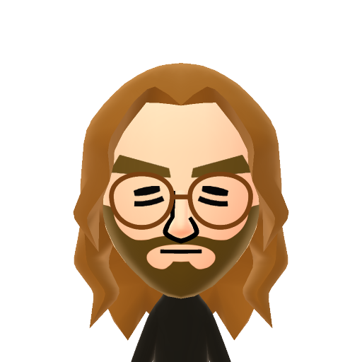

About Crotovane
Hi! I'm Vane (24, any pronouns fine).
I'm a digital artist, gamer, designer(?), "developer", and most importantly: someone with a website. This website came to be during a dark emotional period, and redirecting that bad energy into something productive (building this site) was very helpful in regaining my footing. Every day I become more and more jaded by social media, so this website serves as my curated space on the internet where I can post whatever I want without the oppressive air of algorithms and short-form content. On here, you can find my artwork, personal projects, blog posts talking about media I like, and other miscellaneous interests.
I'm new to web development circles so I'm excited to meet new people and browse everyone's pages! Let me know if you want to be neighbors!
I enjoy playing games, watching movies, reading manga, classical art, tabletop games and D&D, high fantasy, the soundtracks to Skyrim and The Witcher, esoteric media, cute plushies, open source software, modding, 6th- and 7th-generation video game consoles (the PS2 and PS3 remain supreme), Nintendo games, emulation, indie game development, old licensed Spongebob PC games, the Yaukza series, queer readings of aggressively masculine media, the history of pirates, nature documentaries, the ocean, night time city photography, Japanese infrastructure, walkable cities, Wong Kar-Wai films, YouTube deep dives on weird anime, vlogs of people walking through cities in different countries, Jerma985, watching streamers roast David Cage games.
Favorite...
Video Games: The Yakuza/Like a Dragon franchise, Metal Gear Solid 2: Sons of Liberty, Baldur's Gate 3, Dark Souls III, Hades, Stardew Valley, Portal, Shadow of the Colossus, Super Mario Sunshine, LittleBigPlanet
Films: Chungking Express (1994), Happy Together (1997), Howl's Moving Castle (2004), Perfect Blue (1997), Tokyo Fist (1995), In the Mood for Love (2000), American Psycho (2000), Showgirls (1995), The Lighthouse (2019), The Room (2003)
Anime/Manga: Dungeon Meshi, Beastars, JoJo's Bizarre Adventure, Berserk, Golden Kamuy, Dodohedoro
Records: In the Aeroplane Over the Sea (Neutral Milk Hotel), Mellon Collie and the Infinite Sadness (Smashing Pumpkins), Preacher's Daughter (Ethel Cain), I'll Try Living Like This (death's dynamic shroud.wmv), Titanic Rising (Weyes Blood), Punisher (Phoebe Bridgers), SAWAYAMA (Rina Sawayama), Puberty 2 (Mitski), Forever in Your Heart (Black Dresses), Haunted (Poe)
Currently...
Playing: Tomodachi Life
Watching: Dungeon Meshi
Listening to: Waiting42moro by Black Dresses
Reading: N/A